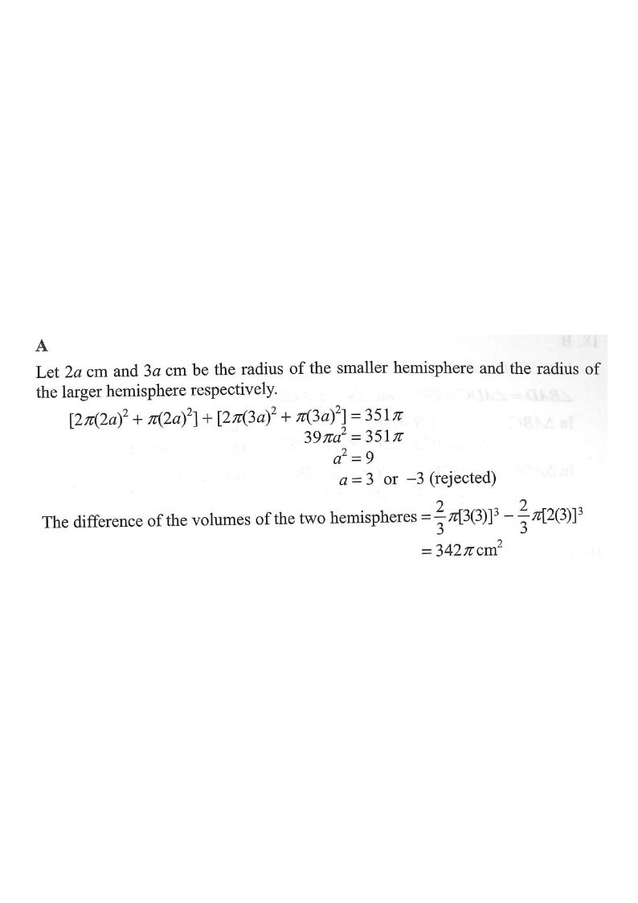

求積法 · 球體

設半徑為 $2k$ 及 $3k$：
$$3\pi(2k)^{2}+3\pi(3k)^{2}=351\pi$$
$$12k^{2}+27k^{2}=351\quad\Longrightarrow\quad39k^{2}=351\quad\Longrightarrow\quad k=3$$
半徑分別為 $6$ 及 $9$。
$$\frac23\pi(9^{3}-6^{3})=\frac23\pi(729-216)=342\pi$$
故選 A。